← 本轮 smoke 总览traex/DeepSeek-V4.1-Flash · 0030
vision-agent · 256×144 · 4.0 FPS · 20 帧 · 状态 complete · 输出 tokens 32097
原始任务Static locked-off single-shot with fixed frame throughout filmed with constant framerate in real-time. The scene shows a realistic scientific demonstration. The scene only contains the described setup and actions. A light-colored coffee table with two tennis balls, one orange and one brown, placed near the center, back to back. A black pipe sits on the table on the left side and points towards the two tennis balls. The grey tennis ball rolls straight out of a black pipe from the left and hits the brown tennis ball.
当前保存结果
已保存候选与代码修改
这里按时间展示外部捕获的候选，每份均可单独播放。保存新版本不等于完成视觉检查；下方工具证据记录实际看过的图。
候选 01 · 2026-11-08T23:30:48.193464+00:00 · 点开播放与检查图
inspection.png

transition_check.png
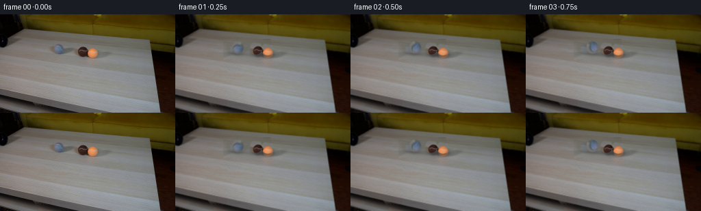
代码变化
--- 上一保存版本
+++ 本次保存版本
@@ -0,0 +1,233 @@
+from pathlib import Path
+
+import cv2
+import numpy as np
+from PIL import Image
+
+import artifact_io
+
+
+WIDTH = 256
+HEIGHT = 144
+FRAMES = 20
+
+
+def make_clean_plate(source: np.ndarray) -> np.ndarray:
+ """Replace the three balls with matching tabletop texture."""
+ plate = source.copy()
+ # The table grain is horizontal, so a nearby clean strip is a better
+ # background donor than interpolating across the entire occupied area.
+ donor = source[36:66, 148:218].copy()
+ target = plate[36:66, 70:140]
+
+ # Break up the copied strip's repeated grain with low-frequency table
+ # shading sampled from the surrounding rows.
+ yy = np.arange(30, dtype=np.float32)[:, None]
+ lighting = (
+ 0.55 * source[35:65, 70:140].astype(np.float32)
+ + 0.45 * source[37:67, 70:140].astype(np.float32)
+ )
+ donor = 0.68 * donor.astype(np.float32) + 0.32 * lighting
+ donor += np.array([0.5, 0.2, -0.4], dtype=np.float32)
+ plate[36:66, 70:140] = np.clip(donor, 0, 255).astype(np.uint8)
+
+ # Feather all four joins into the untouched plate.
+ mask = np.zeros((HEIGHT, WIDTH), dtype=np.uint8)
+ mask[35:67, 69:141] = 255
+ blurred = cv2.GaussianBlur(mask, (0, 0), 4.0).astype(np.float32) / 255.0
+ plate = (
+ plate.astype(np.float32) * blurred[:, :, None]
+ + source.astype(np.float32) * (1.0 - blurred[:, :, None])
+ )
+ return np.clip(plate, 0, 255).astype(np.uint8)
+
+
+def ellipse_alpha(width: int, height: int, cx: float, cy: float, rx: float, ry: float) -> np.ndarray:
+ yy, xx = np.mgrid[:height, :width].astype(np.float32)
+ distance = np.sqrt(((xx - cx) / rx) ** 2 + ((yy - cy) / ry) ** 2)
+ # One-pixel antialiased edge, matching the small-scale source footage.
+ alpha = np.clip((1.04 - distance) / 0.10, 0.0, 1.0)
+ return alpha
+
+
+def extract_sprite(source: np.ndarray, center: tuple[float, float], radius: tuple[float, float]):
+ cx, cy = center
+ rx, ry = radius
+ pad = 4
+ x0 = int(np.floor(cx - rx - pad))
+ x1 = int(np.ceil(cx + rx + pad + 1))
+ y0 = int(np.floor(cy - ry - pad))
+ y1 = int(np.ceil(cy + ry + pad + 1))
+ crop = source[y0:y1, x0:x1].astype(np.float32)
+ alpha = ellipse_alpha(x1 - x0, y1 - y0, cx - x0, cy - y0, rx, ry)
+ return crop, alpha, (x0, y0)
+
+
+def composite_sprite(
+ image: np.ndarray,
+ sprite: np.ndarray,
+ alpha: np.ndarray,
+ x: float,
+ y: float,
+ *,
+ rotation: float = 0.0,
+) -> None:
+ """Composite an RGBA sprite at a subpixel location."""
+ h, w = alpha.shape
+ if rotation:
+ center = ((w - 1) / 2.0, (h - 1) / 2.0)
+ matrix = cv2.getRotationMatrix2D(center, rotation, 1.0)
+ sprite = cv2.warpAffine(
+ sprite, matrix, (w, h), flags=cv2.INTER_LINEAR, borderMode=cv2.BORDER_REFLECT
+ )
+ alpha = cv2.warpAffine(
+ alpha, matrix, (w, h), flags=cv2.INTER_LINEAR, borderMode=cv2.BORDER_CONSTANT
+ )
+
+ scale = 4
+ large_sprite = cv2.resize(
+ sprite, (w * scale, h * scale), interpolation=cv2.INTER_CUBIC
+ )
+ large_alpha = cv2.resize(
+ alpha, (w * scale, h * scale), interpolation=cv2.INTER_CUBIC
+ )
+
+ left = int(round((x - w / 2.0) * scale))
+ top = int(round((y - h / 2.0) * scale))
+ canvas_h, canvas_w = image.shape[:2]
+ canvas = cv2.resize(
+ image, (canvas_w * scale, canvas_h * scale), interpolation=cv2.INTER_CUBIC
+ )
+
+ sx0 = max(0, -left)
+ sy0 = max(0, -top)
+ dx0 = max(0, left)
+ dy0 = max(0, top)
+ copy_w = min(w * scale - sx0, canvas_w * scale - dx0)
+ copy_h = min(h * scale - sy0, canvas_h * scale - dy0)
+ if copy_w <= 0 or copy_h <= 0:
+ return
+
+ src = large_sprite[sy0 : sy0 + copy_h, sx0 : sx0 + copy_w]
+ a = large_alpha[sy0 : sy0 + copy_h, sx0 : sx0 + copy_w, None]
+ dst = canvas[dy0 : dy0 + copy_h, dx0 : dx0 + copy_w]
+ canvas[dy0 : dy0 + copy_h, dx0 : dx0 + copy_w] = src * a + dst * (1.0 - a)
+
+ # Return the composited result to the native frame size.
+ reduced = cv2.resize(canvas, (canvas_w, canvas_h), interpolation=cv2.INTER_AREA)
+ image[:] = np.clip(reduced, 0, 255).astype(np.uint8)
+
+
+def add_contact_shadow(
+ image: np.ndarray,
+ center_x: float,
+ ball_bottom: float,
+ radius_x: float,
+ strength: float,
+) -> None:
+ """Add a soft, grounded shadow beneath a ball."""
+ yy, xx = np.mgrid[:HEIGHT, :WIDTH].astype(np.float32)
+ cx = center_x + 1.2
+ cy = ball_bottom - 0.8
+ shadow = np.exp(
+ -0.5 * (((xx - cx) / radius_x) ** 2 + ((yy - cy) / 2.25) ** 2)
+ )
+ shadow *= strength
+ image[:] = np.clip(
+ image.astype(np.float32) * (1.0 - shadow[:, :, None] * 0.30), 0, 255
+ ).astype(np.uint8)
+
+
+def motion_state(frame_index: int):
+ """Return subpixel centers for the three balls at each frame."""
+ t = frame_index / 4.0
+
+ # The grey ball rolls from its initial position toward the brown ball.
+ # Its contact is at t=2.0 s; it rebounds only a little.
+ grey_start = 86.8
+ contact_time = 2.00
+ if t < contact_time:
+ travel = (t / contact_time) ** 0.94
+ grey_x = grey_start + 27.2 * travel
+ grey_rotation = 360.0 * travel
+ else:
+ rebound = 1.0 - np.exp(-(t - contact_time) * 4.0)
+ grey_x = grey_start + 27.2 - 2.1 * rebound
+ grey_rotation = 360.0 + 18.0 * rebound
+
+ # Brown and orange are already touching. Momentum is shared, then both
+ # decelerate together as the pair rolls a short distance to the right.
+ if t <= contact_time:
+ brown_x = 117.8
+ orange_x = 134.8
+ brown_rotation = 0.0
+ orange_rotation = 0.0
+ else:
+ tau = t - contact_time
+ pair_travel = 6.0 * tau * np.exp(-0.85 * tau)
+ brown_x = 117.8 + pair_travel
+ orange_x = 134.8 + pair_travel
+ brown_rotation = 4.0 * pair_travel
+ orange_rotation = 4.0 * pair_travel
+
+ # A tiny settling motion keeps the final two seconds from looking frozen.
+ settle = max(0.0, min(1.0, (t - 3.6) / 0.6))
+ brown_x += 0.25 * np.sin(settle * np.pi) * (1.0 - settle)
+
+ return (
+ (grey_x, 48.8, grey_rotation),
+ (brown_x, 49.8, brown_rotation),
+ (orange_x, 50.9, orange_rotation),
+ )
+
+
+def generate_frames() -> np.ndarray:
+ source = np.asarray(Image.open("first_frame.png").convert("RGB"))
+ clean = make_clean_plate(source)
+
+ grey = extract_sprite(source, (86.8, 48.8), (9.0, 9.2))
+ brown = extract_sprite(source, (117.8, 49.8), (9.1, 9.3))
+ orange = extract_sprite(source, (134.8, 50.9), (9.1, 9.3))
+ balls = (grey, brown, orange)
+
+ frames = []
+ for index in range(FRAMES):
+ if index == 0:
+ frames.append(source.copy())
+ continue
+
+ image = clean.copy()
+ states = motion_state(index)
+
+ # Shadows are painted before the sprites so each ball remains grounded.
+ add_contact_shadow(image, states[0][0], 58.2, 8.2, 0.72)
+ add_contact_shadow(image, states[1][0], 59.2, 8.4, 0.78)
+ add_contact_shadow(image, states[2][0], 60.3, 8.4, 0.82)
+
+ for (sprite, alpha, _), (x, y, rotation) in zip(balls, states):
+ composite_sprite(image, sprite, alpha, x, y, rotation=rotation)
+ frames.append(image)
+
+ return np.stack(frames, axis=0).astype(np.uint8)
+
+
+def main() -> None:
+ case_dir = Path(__file__).resolve().parent
+ frames = generate_frames()
+ artifact_io.save(frames, case_dir)
+
+ # A local preview is useful for inspecting motion, while the packed frame
+ # data remains the authoritative artifact.
+ writer = cv2.VideoWriter(
+ str(case_dir / "preview.mp4"),
+ cv2.VideoWriter_fourcc(*"mp4v"),
+ 4.0,
+ (WIDTH, HEIGHT),
+ )
+ for frame in frames:
+ writer.write(cv2.cvtColor(frame, cv2.COLOR_RGB2BGR))
+ writer.release()
+
+
+if __name__ == "__main__":
+ main()
候选 02 · 2026-11-08T23:31:45.392070+00:00 · 点开播放与检查图
inspection.png

transition_check.png

代码变化
--- 上一保存版本
+++ 本次保存版本
@@ -15,30 +15,36 @@
def make_clean_plate(source: np.ndarray) -> np.ndarray:
"""Replace the three balls with matching tabletop texture."""
plate = source.copy()
- # The table grain is horizontal, so a nearby clean strip is a better
- # background donor than interpolating across the entire occupied area.
- donor = source[36:66, 148:218].copy()
- target = plate[36:66, 70:140]
-
- # Break up the copied strip's repeated grain with low-frequency table
- # shading sampled from the surrounding rows.
- yy = np.arange(30, dtype=np.float32)[:, None]
- lighting = (
- 0.55 * source[35:65, 70:140].astype(np.float32)
- + 0.45 * source[37:67, 70:140].astype(np.float32)
- )
- donor = 0.68 * donor.astype(np.float32) + 0.32 * lighting
- donor += np.array([0.5, 0.2, -0.4], dtype=np.float32)
- plate[36:66, 70:140] = np.clip(donor, 0, 255).astype(np.uint8)
-
- # Feather all four joins into the untouched plate.
- mask = np.zeros((HEIGHT, WIDTH), dtype=np.uint8)
- mask[35:67, 69:141] = 255
- blurred = cv2.GaussianBlur(mask, (0, 0), 4.0).astype(np.float32) / 255.0
- plate = (
- plate.astype(np.float32) * blurred[:, :, None]
- + source.astype(np.float32) * (1.0 - blurred[:, :, None])
- )
+ # The table grain runs horizontally and is nearly uniform along each row.
+ # Copying a clean strip from the same rows retains the original lighting.
+ x0, x1 = 69, 147
+ donor_x = 151
+ width = x1 - x0
+ y0, y1 = 34, 68
+ donor = source[y0:y1, donor_x : donor_x + width].astype(np.float32)
+
+ # Match each copied row's broad luminance to the table immediately above
+ # and below the masked area. This removes any slight horizontal vignette.
+ row_shift = (
+ source[y0 - 3 : y1 - 3, x0:x1].astype(np.float32).mean(axis=(1, 2))
+ - source[y0:y1, donor_x : donor_x + width].astype(np.float32).mean(axis=(1, 2))
+ )
+ donor += row_shift[:, None, None] * 0.55
+ plate[y0:y1, x0:x1] = np.clip(donor, 0, 255).astype(np.uint8)
+
+ # Feather only the patch boundary; the center remains untouched texture.
+ alpha = np.ones((y1 - y0, width), dtype=np.float32)
+ edge = 5
+ ramp = np.linspace(0.0, 1.0, edge, dtype=np.float32)
+ alpha[:, :edge] *= ramp[None, :]
+ alpha[:, -edge:] *= ramp[::-1][None, :]
+ alpha[:edge, :] *= ramp[:, None]
+ alpha[-edge:, :] *= ramp[::-1][:, None]
+ patch = plate[y0:y1, x0:x1].astype(np.float32)
+ original = source[y0:y1, x0:x1].astype(np.float32)
+ plate[y0:y1, x0:x1] = np.clip(
+ patch * alpha[:, :, None] + original * (1.0 - alpha[:, :, None]), 0, 255
+ ).astype(np.uint8)
return np.clip(plate, 0, 255).astype(np.uint8)
@@ -67,22 +73,12 @@
image: np.ndarray,
sprite: np.ndarray,
alpha: np.ndarray,
+ sprite_center: tuple[float, float],
x: float,
y: float,
- *,
- rotation: float = 0.0,
) -> None:
"""Composite an RGBA sprite at a subpixel location."""
h, w = alpha.shape
- if rotation:
- center = ((w - 1) / 2.0, (h - 1) / 2.0)
- matrix = cv2.getRotationMatrix2D(center, rotation, 1.0)
- sprite = cv2.warpAffine(
- sprite, matrix, (w, h), flags=cv2.INTER_LINEAR, borderMode=cv2.BORDER_REFLECT
- )
- alpha = cv2.warpAffine(
- alpha, matrix, (w, h), flags=cv2.INTER_LINEAR, borderMode=cv2.BORDER_CONSTANT
- )
scale = 4
large_sprite = cv2.resize(
@@ -92,8 +88,8 @@
alpha, (w * scale, h * scale), interpolation=cv2.INTER_CUBIC
)
- left = int(round((x - w / 2.0) * scale))
- top = int(round((y - h / 2.0) * scale))
+ left = int(round((x - sprite_center[0]) * scale))
+ top = int(round((y - sprite_center[1]) * scale))
canvas_h, canvas_w = image.shape[:2]
canvas = cv2.resize(
image, (canvas_w * scale, canvas_h * scale), interpolation=cv2.INTER_CUBIC
@@ -174,11 +170,7 @@
settle = max(0.0, min(1.0, (t - 3.6) / 0.6))
brown_x += 0.25 * np.sin(settle * np.pi) * (1.0 - settle)
- return (
- (grey_x, 48.8, grey_rotation),
- (brown_x, 49.8, brown_rotation),
- (orange_x, 50.9, orange_rotation),
- )
+ return (grey_x, 48.8), (brown_x, 49.8), (orange_x, 50.9)
def generate_frames() -> np.ndarray:
@@ -204,8 +196,37 @@
add_contact_shadow(image, states[1][0], 59.2, 8.4, 0.78)
add_contact_shadow(image, states[2][0], 60.3, 8.4, 0.82)
- for (sprite, alpha, _), (x, y, rotation) in zip(balls, states):
- composite_sprite(image, sprite, alpha, x, y, rotation=rotation)
+ # Composite all three sprites in one pass at 4x resolution, avoiding
+ # cumulative resampling blur.
+ scale = 4
+ canvas = cv2.resize(
+ image, (WIDTH * scale, HEIGHT * scale), interpolation=cv2.INTER_CUBIC
+ )
+ for (sprite, alpha, (sx, sy)), (x, y) in zip(balls, states):
+ h, w = alpha.shape
+ large_sprite = cv2.resize(
+ sprite, (w * scale, h * scale), interpolation=cv2.INTER_CUBIC
+ )
+ large_alpha = cv2.resize(
+ alpha, (w * scale, h * scale), interpolation=cv2.INTER_CUBIC
+ )
+ left = int(round((x - (sx + w / 2.0)) * scale))
+ top = int(round((y - (sy + h / 2.0)) * scale))
+ sx0 = max(0, -left)
+ sy0 = max(0, -top)
+ dx0 = max(0, left)
+ dy0 = max(0, top)
+ copy_w = min(w * scale - sx0, WIDTH * scale - dx0)
+ copy_h = min(h * scale - sy0, HEIGHT * scale - dy0)
+ if copy_w <= 0 or copy_h <= 0:
+ continue
+ src = large_sprite[sy0 : sy0 + copy_h, sx0 : sx0 + copy_w]
+ a = large_alpha[sy0 : sy0 + copy_h, sx0 : sx0 + copy_w, None]
+ dst = canvas[dy0 : dy0 + copy_h, dx0 : dx0 + copy_w]
+ canvas[dy0 : dy0 + copy_h, dx0 : dx0 + copy_w] = src * a + dst * (1.0 - a)
+ image[:] = np.clip(
+ cv2.resize(canvas, (WIDTH, HEIGHT), interpolation=cv2.INTER_AREA), 0, 255
+ ).astype(np.uint8)
frames.append(image)
return np.stack(frames, axis=0).astype(np.uint8)
候选 03 · 2026-11-08T23:31:47.256122+00:00 · 点开播放与检查图
inspection.png

transition_check.png

代码变化
代码未变化；重新保存了产物。
候选 04 · 2026-11-08T23:33:02.988670+00:00 · 点开播放与检查图
inspection.png
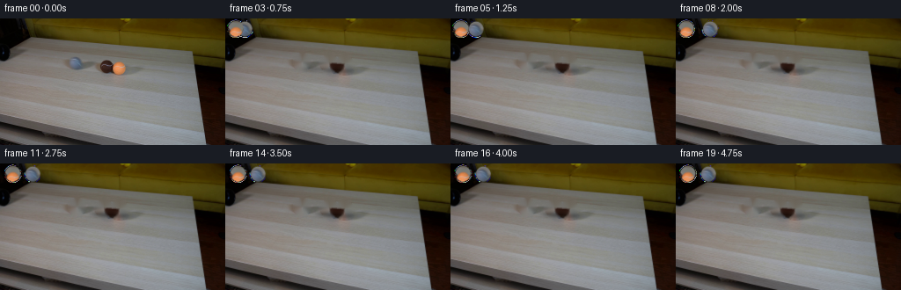
transition_check.png
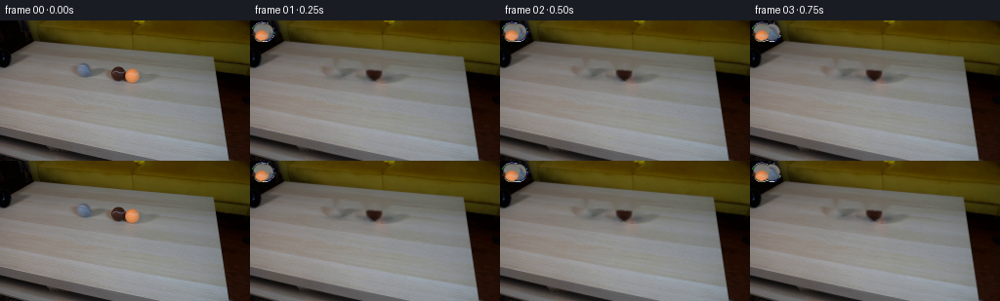
代码变化
--- 上一保存版本
+++ 本次保存版本
@@ -15,36 +15,15 @@
def make_clean_plate(source: np.ndarray) -> np.ndarray:
"""Replace the three balls with matching tabletop texture."""
plate = source.copy()
- # The table grain runs horizontally and is nearly uniform along each row.
- # Copying a clean strip from the same rows retains the original lighting.
- x0, x1 = 69, 147
- donor_x = 151
- width = x1 - x0
- y0, y1 = 34, 68
- donor = source[y0:y1, donor_x : donor_x + width].astype(np.float32)
-
- # Match each copied row's broad luminance to the table immediately above
- # and below the masked area. This removes any slight horizontal vignette.
- row_shift = (
- source[y0 - 3 : y1 - 3, x0:x1].astype(np.float32).mean(axis=(1, 2))
- - source[y0:y1, donor_x : donor_x + width].astype(np.float32).mean(axis=(1, 2))
- )
- donor += row_shift[:, None, None] * 0.55
- plate[y0:y1, x0:x1] = np.clip(donor, 0, 255).astype(np.uint8)
-
- # Feather only the patch boundary; the center remains untouched texture.
- alpha = np.ones((y1 - y0, width), dtype=np.float32)
- edge = 5
- ramp = np.linspace(0.0, 1.0, edge, dtype=np.float32)
- alpha[:, :edge] *= ramp[None, :]
- alpha[:, -edge:] *= ramp[::-1][None, :]
- alpha[:edge, :] *= ramp[:, None]
- alpha[-edge:, :] *= ramp[::-1][:, None]
- patch = plate[y0:y1, x0:x1].astype(np.float32)
- original = source[y0:y1, x0:x1].astype(np.float32)
- plate[y0:y1, x0:x1] = np.clip(
- patch * alpha[:, :, None] + original * (1.0 - alpha[:, :, None]), 0, 255
- ).astype(np.uint8)
+ mask = np.zeros((HEIGHT, WIDTH), dtype=np.uint8)
+ cv2.ellipse(mask, (87, 49), (10, 10), 0, 0, 360, 255, -1)
+ cv2.ellipse(mask, (118, 50), (10, 10), 0, 0, 360, 255, -1)
+ cv2.ellipse(mask, (135, 51), (10, 10), 0, 0, 360, 255, -1)
+ cv2.ellipse(mask, (118, 59), (8, 3), 0, 0, 360, 255, -1)
+ cv2.ellipse(mask, (135, 60), (8, 3), 0, 0, 360, 255, -1)
+ bgr = cv2.cvtColor(source, cv2.COLOR_RGB2BGR)
+ clean = cv2.inpaint(bgr, mask, 2, cv2.INPAINT_TELEA)
+ plate = cv2.cvtColor(clean, cv2.COLOR_BGR2RGB)
return np.clip(plate, 0, 255).astype(np.uint8)
@@ -59,13 +38,13 @@
def extract_sprite(source: np.ndarray, center: tuple[float, float], radius: tuple[float, float]):
cx, cy = center
rx, ry = radius
- pad = 4
+ pad = 2
x0 = int(np.floor(cx - rx - pad))
x1 = int(np.ceil(cx + rx + pad + 1))
y0 = int(np.floor(cy - ry - pad))
y1 = int(np.ceil(cy + ry + pad + 1))
crop = source[y0:y1, x0:x1].astype(np.float32)
- alpha = ellipse_alpha(x1 - x0, y1 - y0, cx - x0, cy - y0, rx, ry)
+ alpha = ellipse_alpha(x1 - x0, y1 - y0, cx - x0, cy - y0, rx - 0.55, ry - 0.55)
return crop, alpha, (x0, y0)
@@ -143,28 +122,22 @@
grey_start = 86.8
contact_time = 2.00
if t < contact_time:
- travel = (t / contact_time) ** 0.94
+ travel = t / contact_time
grey_x = grey_start + 27.2 * travel
- grey_rotation = 360.0 * travel
else:
rebound = 1.0 - np.exp(-(t - contact_time) * 4.0)
grey_x = grey_start + 27.2 - 2.1 * rebound
- grey_rotation = 360.0 + 18.0 * rebound
# Brown and orange are already touching. Momentum is shared, then both
# decelerate together as the pair rolls a short distance to the right.
if t <= contact_time:
brown_x = 117.8
orange_x = 134.8
- brown_rotation = 0.0
- orange_rotation = 0.0
else:
tau = t - contact_time
pair_travel = 6.0 * tau * np.exp(-0.85 * tau)
brown_x = 117.8 + pair_travel
orange_x = 134.8 + pair_travel
- brown_rotation = 4.0 * pair_travel
- orange_rotation = 4.0 * pair_travel
# A tiny settling motion keeps the final two seconds from looking frozen.
settle = max(0.0, min(1.0, (t - 3.6) / 0.6))
可观测工具行为
命令 1 · 2026-11-08T23:27:49.166230+00:00/bin/bash -c 'cat prompt.txt'
exit 0 命令 2 · 2026-11-08T23:27:49.280247+00:00/bin/bash -c "pwd && rg --files -g '"'!*.mp4'"' -g '"'!*.png'"' | sed -n '1,120p'"
exit 0 命令 3 · 2026-11-08T23:27:49.553377+00:00/bin/bash -c 'cat GENERATION_RULES.md'
exit 0 命令 4 · 2026-11-08T23:27:49.729017+00:00/bin/bash -c "find . -maxdepth 2 -type f -printf '%p %s bytes\\n' | sort | sed -n '1,160p'"
exit 0 命令 5 · 2026-11-08T23:28:02.627975+00:00/bin/bash -c 'cat artifact_io.py'
exit 0 命令 6 · 2026-11-08T23:28:02.804113+00:00/bin/bash -c 'cat player_template.html'
exit 0 命令 7 · 2026-11-08T23:28:03.252733+00:00/bin/bash -c "python - <<'PY'
from PIL import Image
im=Image.open('first_frame.png')
print(im.mode, im.size)
PY"exit 0 命令 8 · 2026-11-08T23:28:03.530229+00:00/bin/bash -c "python - <<'PY'
try:
import cv2; print('cv2', cv2.__version__)
except Exception as e: print('no cv2',e)
try:
import scipy; print('scipy', scipy.__version__)
except Exception as e: print('no scipy',e)
try:
import numpy; print('numpy', numpy.__version__)
except Exception as e: print('no numpy',e)
PY"exit 0 命令 9 · 2026-11-08T23:28:10.348555+00:00/bin/bash -c "python - <<'PY'
from PIL import Image
im=Image.open('first_frame.png')
im.crop((0,25,160,85)).resize((960,360), Image.Resampling.NEAREST).save('.tmp/scene_crop.png')
PY"exit 0 命令 10 · 2026-11-08T23:28:20.244781+00:00/bin/bash -c "python - <<'PY'
from PIL import Image
im=Image.open('first_frame.png')
im.crop((0,0,90,90)).resize((720,720), Image.Resampling.NEAREST).save('.tmp/left_crop.png')
PY"exit 0 命令 11 · 2026-11-08T23:28:42.348954+00:00/bin/bash -c "python - <<'PY'
from PIL import Image
im=Image.open('first_frame.png')
for name,box in [('balls',(74,36,146,66)),('grey',(78,39,96,58)),('brown',(110,42,128,60)),('orange',(126,42,144,61)),('pipe',(0,16,64,66))]:
im.crop(box).resize(((box[2]-box[0])*16,(box[3]-box[1])*16),Image.Resampling.NEAREST).save('.tmp/'+name+'.png')
PY"exit 0 命令 12 · 2026-11-08T23:29:11.174890+00:00/bin/bash -c "python - <<'PY'
from PIL import Image
im=Image.open('first_frame.png')
im.crop((145,32,222,70)).resize((924,456),Image.Resampling.NEAREST).save('.tmp/donor_crop.png')
PY"exit 0 命令 13 · 2026-11-08T23:29:25.010376+00:00/bin/bash -c "python - <<'PY'
from PIL import Image
im=Image.open('first_frame.png')
# local contrast-enhanced upscale of left black object
from PIL import ImageEnhance, ImageFilter
crop=im.crop((0,10,68,70)).resize((680,600),Image.Resampling.LANCZOS)
crop=ImageEnhance.Brightness(crop).enhance(2.5)
crop=ImageEnhance.Contrast(crop).enhance(1.4)
crop.save('.tmp/pipe_bright.png')
PY"exit 0 命令 14 · 2026-11-08T23:29:46.953729+00:00/bin/bash -c "python - <<'PY'
from PIL import Image
import numpy as np
im=np.array(Image.open('first_frame.png'))
for name,(x,y) in {'grey_center':(87,49),'grey_hi':(84,46),'grey_shadow':(91,53),'brown_center':(118,49),'brown_hi':(115,46),'brown_shadow':(121,54),'orange_center':(135,51),'orange_hi':(132,48),'orange_shadow':(138,55),'table_near':(100,68),'table_up':(100,32)}.items():
print(name,im[y,x].tolist())
PY"exit 0 命令 15 · 2026-11-08T23:29:51.467870+00:00/bin/bash -c "python - <<'PY'
from PIL import Image
im=Image.open('first_frame.png')
for name,box in [('grey_big',(77,39,98,59)),('brown_big',(108,41,129,62)),('orange_big',(125,41,146,62))]:
im.crop(box).resize((420,420),Image.Resampling.NEAREST).save('.tmp/'+name+'.png')
PY"exit 0 命令 16 · 2026-11-08T23:30:37.653546+00:00/bin/bash -c 'python generate.py'
exit 1 命令 17 · 2026-11-08T23:30:47.091413+00:00/bin/bash -c 'python generate.py'
exit 0 命令 18 · 2026-11-08T23:31:07.936678+00:00/bin/bash -c "python - <<'PY'
import cv2, numpy as np
from PIL import Image
im=cv2.cvtColor(np.asarray(Image.open('first_frame.png').convert('RGB')),cv2.COLOR_RGB2BGR)
mask=np.zeros(im.shape[:2],np.uint8)
cv2.ellipse(mask,(86,49),(11,11),0,0,360,255,-1)
cv2.ellipse(mask,(117,50),(11,11),0,0,360,255,-1)
cv2.ellipse(mask,(135,51),(11,11),0,0,360,255,-1)
# include contact shadows
cv2.ellipse(mask,(117,60),(11,4),0,0,360,255,-1)
cv2.ellipse(mask,(135,61),(11,4),0,0,360,255,-1)
for r in [3,5,7,10]:
out=cv2.inpaint(im,mask,r,cv2.INPAINT_TELEA)
cv2.imwrite(f'.tmp/inpaint_{r}.png',cv2.cvtColor(out,cv2.COLOR_BGR2RGB))
PY"exit 0 命令 19 · 2026-11-08T23:31:12.324464+00:00/bin/bash -c "python - <<'PY'
from PIL import Image, ImageDraw
out=Image.new('RGB',(768,288*2),(20,20,20))
for i,r in enumerate([3,5,7,10]):
im=Image.open(f'.tmp/inpaint_{r}.png').crop((65,32,150,70)).resize((510,228),Image.Resampling.NEAREST)
out.paste(im,((i%2)*384,(i//2)*288))
ImageDraw.Draw(out).text(((i%2)*384+5,(i//2)*288+5),f'radius {r}',fill='white')
out.save('.tmp/inpaint_compare.png')
PY"exit 0 命令 20 · 2026-11-08T23:31:44.796637+00:00/bin/bash -c 'python generate.py'
exit 0 命令 21 · 2026-11-08T23:31:56.510221+00:00/bin/bash -c "python - <<'PY'
from PIL import Image
for i in [0,1,4,8,12,16,19]:
im=Image.open(f'frames/{i:02d}.png').crop((60,30,155,70)).resize((760,320),Image.Resampling.NEAREST)
im.save(f'.tmp/frame_{i:02d}_crop.png')
PY"exit 0 命令 22 · 2026-11-08T23:32:13.103894+00:00/bin/bash -c "python - <<'PY'
from PIL import Image
import numpy as np
a=np.array(Image.open('first_frame.png'))
b=np.array(Image.open('frames/00.png'))
print('shape',b.shape,'dtype',b.dtype,'identical',np.array_equal(a,b),'maxdiff',np.abs(a.astype(int)-b.astype(int)).max())
# per frame diff against clean background areas
for i in range(20):
x=np.array(Image.open(f'frames/{i:02d}.png'))
print(i, int(np.abs(x.astype(int)-a.astype(int)).sum()))
PY"exit 0 命令 23 · 2026-11-08T23:32:26.414629+00:00/bin/bash -c "python - <<'PY'
from PIL import Image
import cv2, numpy as np
src=np.array(Image.open('first_frame.png').convert('RGB'))
mask=np.zeros(src.shape[:2],np.uint8)
# tight ball masks only
cv2.ellipse(mask,(87,49),(10,10),0,0,360,255,-1)
cv2.ellipse(mask,(118,50),(10,10),0,0,360,255,-1)
cv2.ellipse(mask,(135,51),(10,10),0,0,360,255,-1)
# add only close contact shadows, small ellipse
cv2.ellipse(mask,(118,59),(8,3),0,0,360,255,-1)
cv2.ellipse(mask,(135,60),(8,3),0,0,360,255,-1)
for r in [1,2,3,4]:
out=cv2.inpaint(cv2.cvtColor(src,cv2.COLOR_RGB2BGR),mask,r,cv2.INPAINT_TELEA)
cv2.imwrite(f'.tmp/tight_inpaint_{r}.png',out)
# copy per-row donor and match local brightness
out=src.copy().astype(np.float32)
ys,xs=np.where(mask>0)
for y in np.unique(ys):
sel=xs[ys==y]
# donor 55 px right
vals=src[y,sel+55].astype(np.float32)
# match mean of immediate surrounding mask row
local=src[y, sel[(sel>=72)&(sel<145)]].astype(np.float32) if False else None
# row lighting match using clean pixels nearby
row=src[y].astype(np.float32)
clean=np.ones(256,bool); clean[65:150]=False
shift=row[clean].mean(axis=0)-row[150:245].mean(axis=0)
out[y,sel]=np.clip(vals+shift*.5,0,255)
cv2.imwrite('.tmp/tight_rowcopy.png',cv2.cvtColor(out.astype(np.uint8),cv2.COLOR_RGB2BGR))
PY"exit 0 命令 24 · 2026-11-08T23:32:31.273598+00:00/bin/bash -c "python - <<'PY'
from PIL import Image, ImageDraw
out=Image.new('RGB',(760,660),(20,20,20))
for i,name in enumerate(['tight_inpaint_1','tight_inpaint_2','tight_inpaint_3','tight_inpaint_4','tight_rowcopy']):
im=Image.open(f'.tmp/{name}.png').crop((65,32,150,70)).resize((680,304),Image.Resampling.NEAREST)
out.paste(im,(0,i*132))
ImageDraw.Draw(out).text((5,i*132+5),name,fill='white')
out.save('.tmp/tight_compare.png')
PY"exit 0 命令 25 · 2026-11-08T23:32:39.089202+00:00/bin/bash -c "python - <<'PY'
from PIL import Image
im=Image.open('.tmp/tight_inpaint_2.png')
im.crop((65,30,150,72)).resize((1020,504),Image.Resampling.NEAREST).save('.tmp/tight_inpaint_zoom.png')
PY"exit 0 命令 26 · 2026-11-08T23:33:01.243855+00:00/bin/bash -c 'python generate.py'
exit 0 命令 27 · 2026-11-08T23:33:08.673472+00:00/bin/bash -c "python - <<'PY'
from PIL import Image
for i in [1,4,8,12,16,19]:
im=Image.open(f'frames/{i:02d}.png').crop((60,30,155,70)).resize((760,320),Image.Resampling.NEAREST)
im.save(f'.tmp/final_{i:02d}_crop.png')
PY"exit 0 命令 28 · 2026-11-08T23:33:19.629377+00:00/bin/bash -c "python - <<'PY'
from PIL import Image
import numpy as np
src=np.array(Image.open('first_frame.png'))
for i in [1,4,8,12,16,19]:
a=np.array(Image.open(f'frames/{i:02d}.png'))
# only compare regions outside ball area, table static should be unchanged
diff=np.abs(a.astype(int)-src.astype(int)).max(axis=2)
print(i,'changed pixels',int((diff>2).sum()),'max',diff.max())
PY"exit 0 命令 29 · 2026-11-08T23:33:24.326581+00:00/bin/bash -c "python - <<'PY'
from PIL import Image
import numpy as np
src=np.array(Image.open('first_frame.png'))
for i in [1,4,8,12,16,19]:
a=np.array(Image.open(f'frames/{i:02d}.png'))
diff=np.abs(a.astype(int)-src.astype(int)).max(axis=2)
ys,xs=np.where(diff>2)
print(i, (xs.min(),ys.min(),xs.max(),ys.max()) if len(xs) else None)
PY"exit 0 视觉工具实际返回图片 1

视觉工具实际返回图片 2
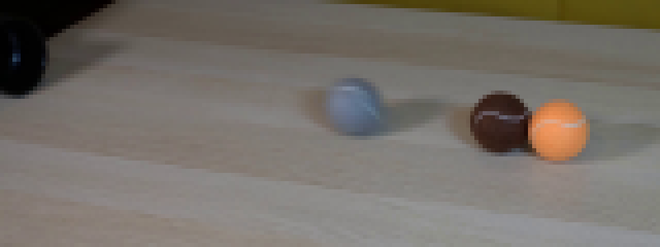
视觉工具实际返回图片 3
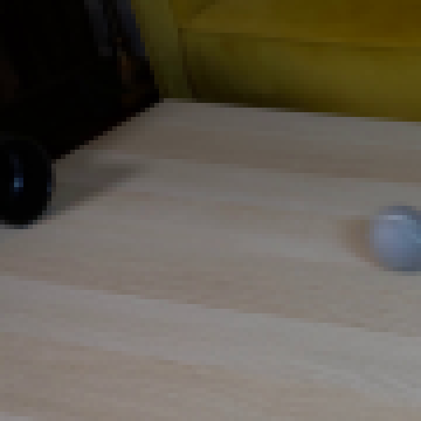
视觉工具实际返回图片 4
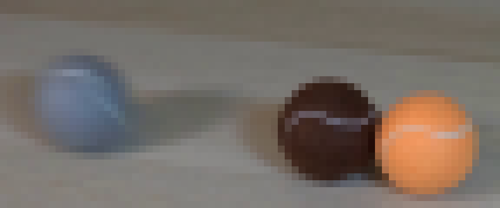
视觉工具实际返回图片 5
视觉工具实际返回图片 6
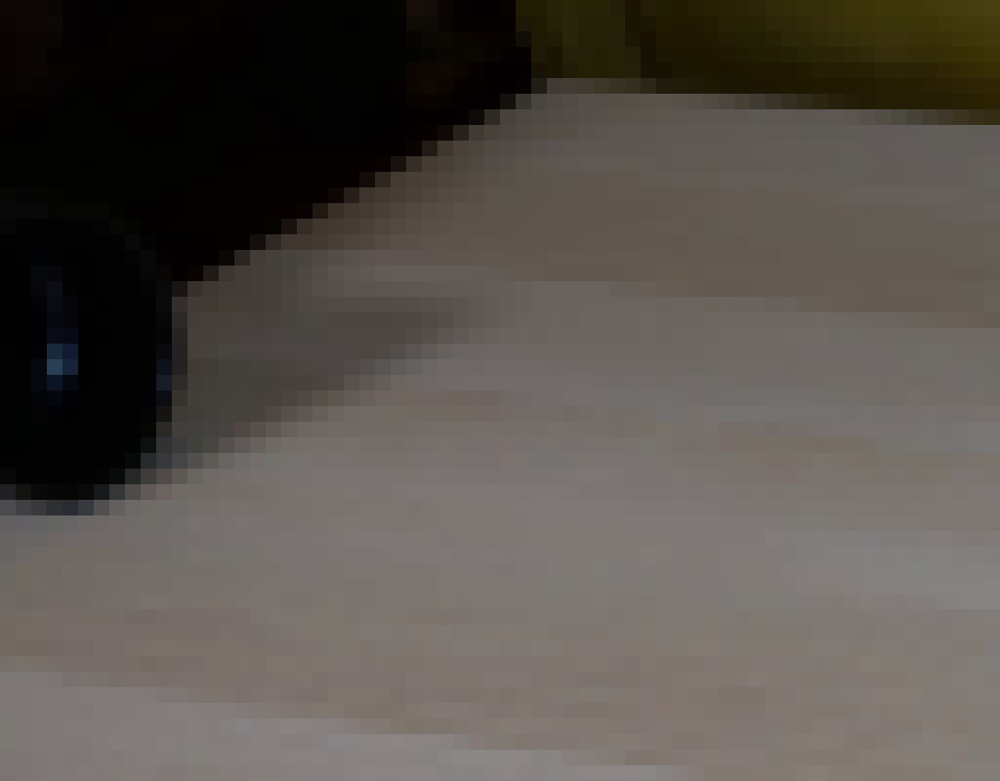
视觉工具实际返回图片 7
视觉工具实际返回图片 8
视觉工具实际返回图片 9
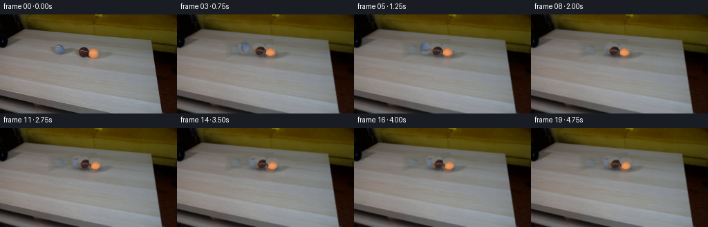
视觉工具实际返回图片 10
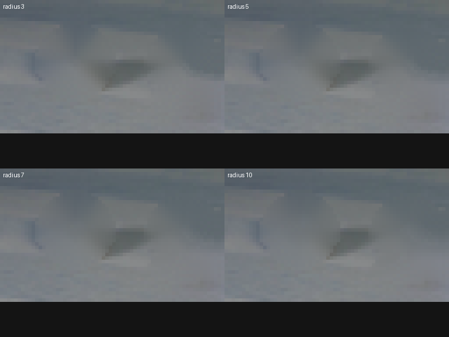
视觉工具实际返回图片 11
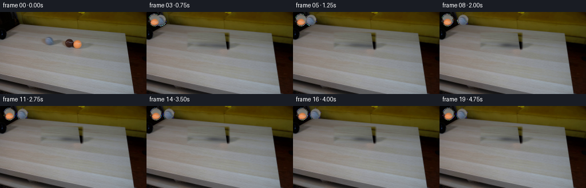
视觉工具实际返回图片 12
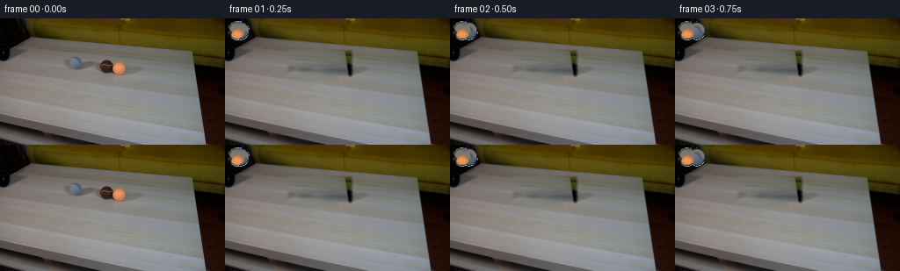
视觉工具实际返回图片 13
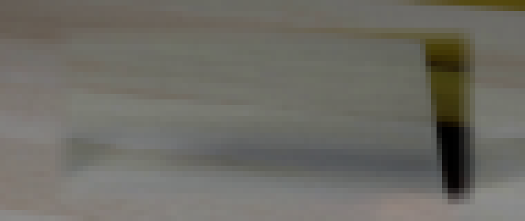
视觉工具实际返回图片 14
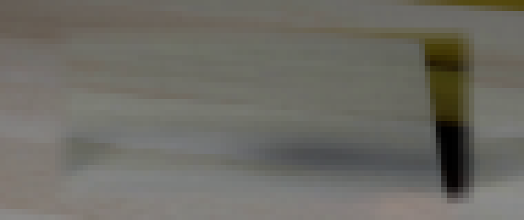
视觉工具实际返回图片 15
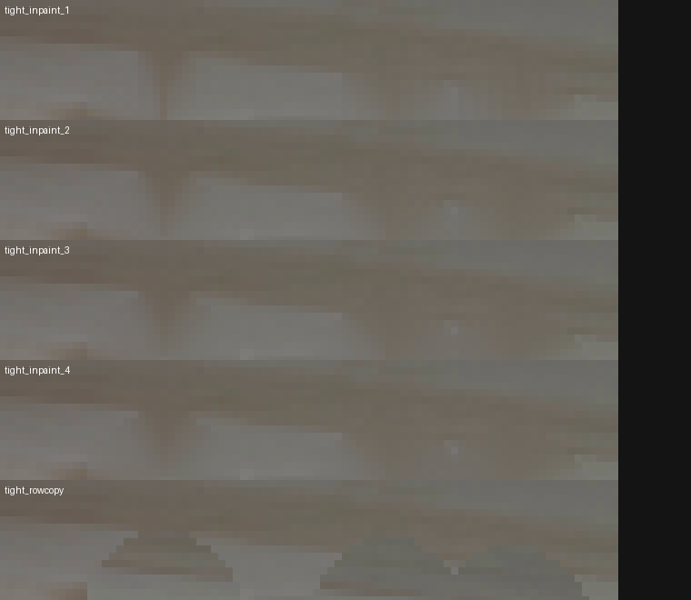
视觉工具实际返回图片 16
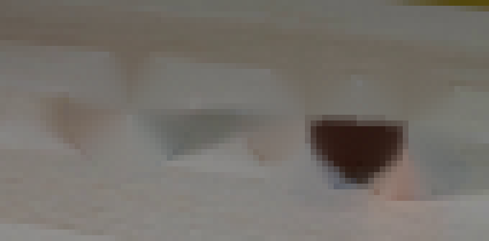
视觉工具实际返回图片 17

视觉工具实际返回图片 18
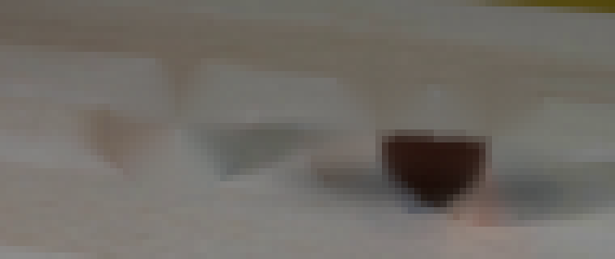
视觉工具实际返回图片 19
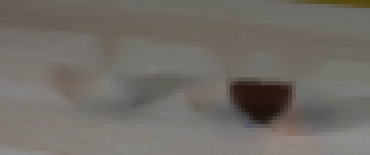
保存候选 4 份；完成命令 29 次；可验证图片返回 19 张。原始 API 响应与完整日志保留在本地。